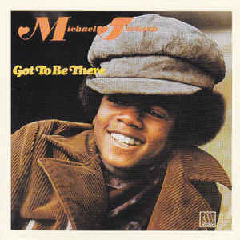
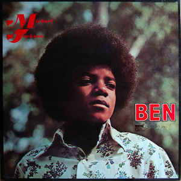
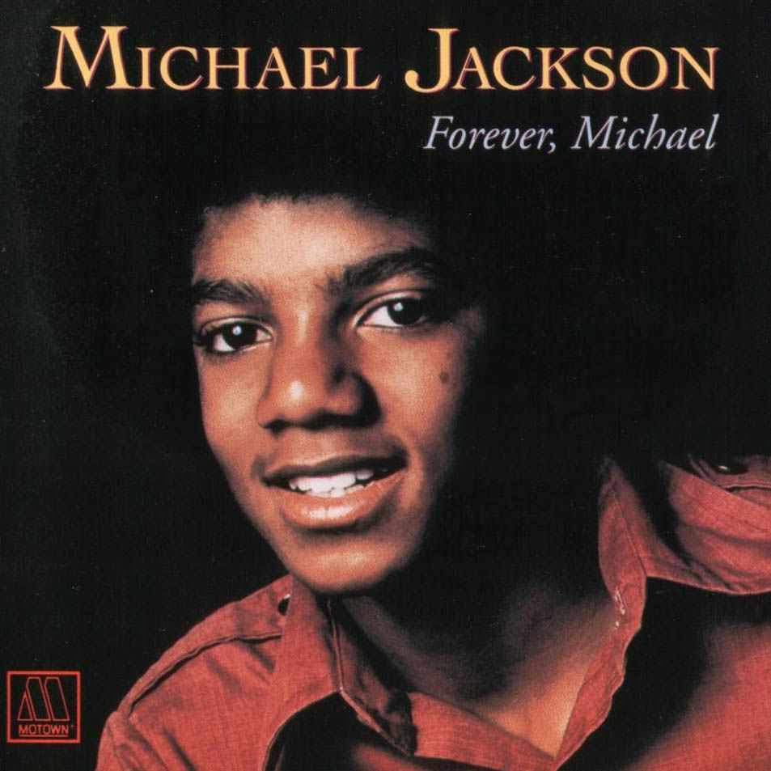
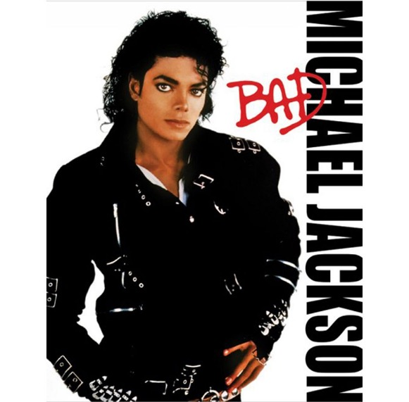
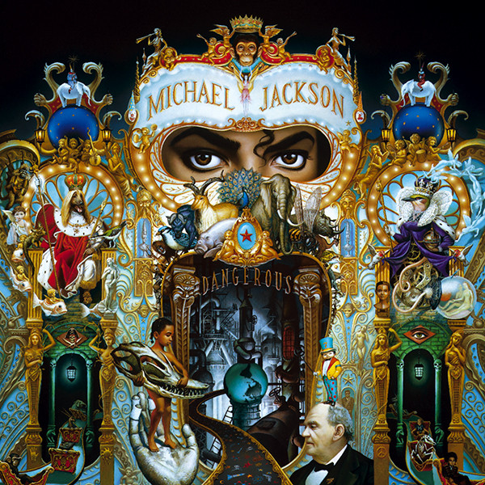
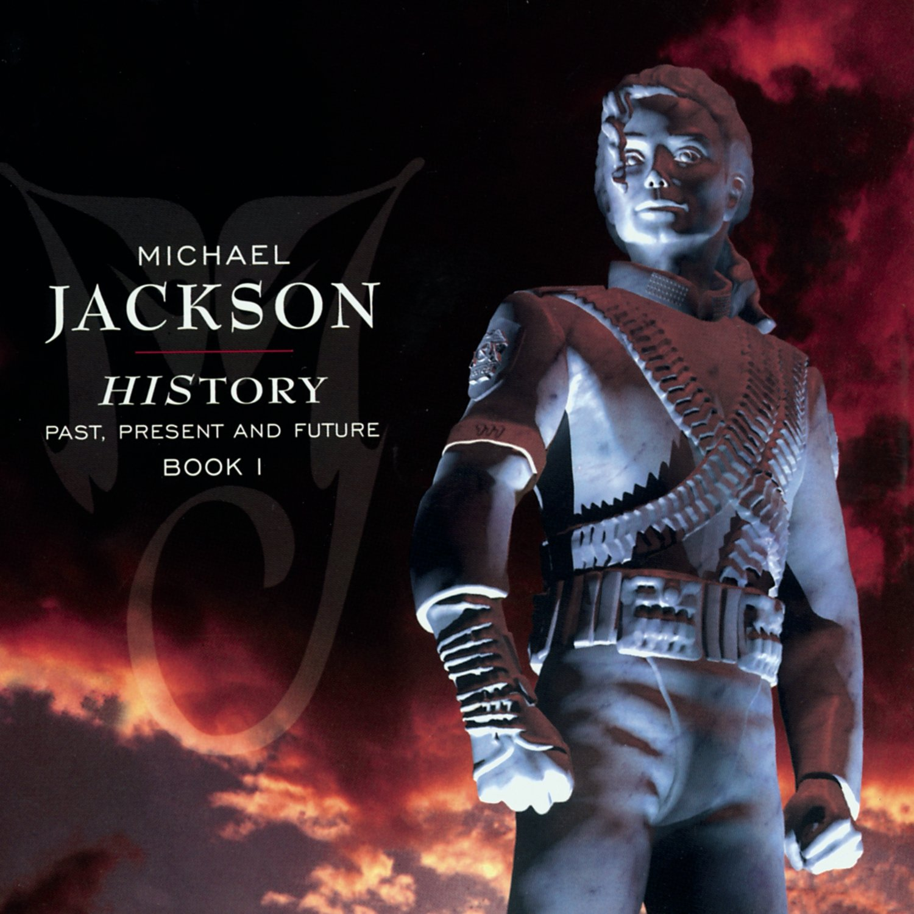
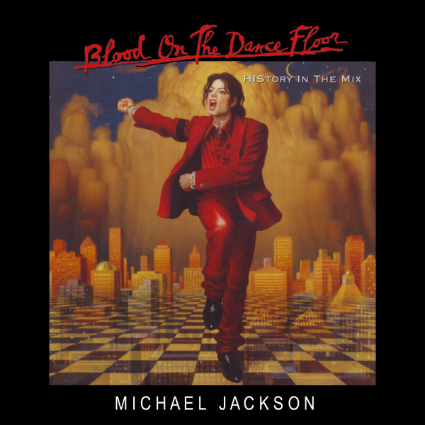
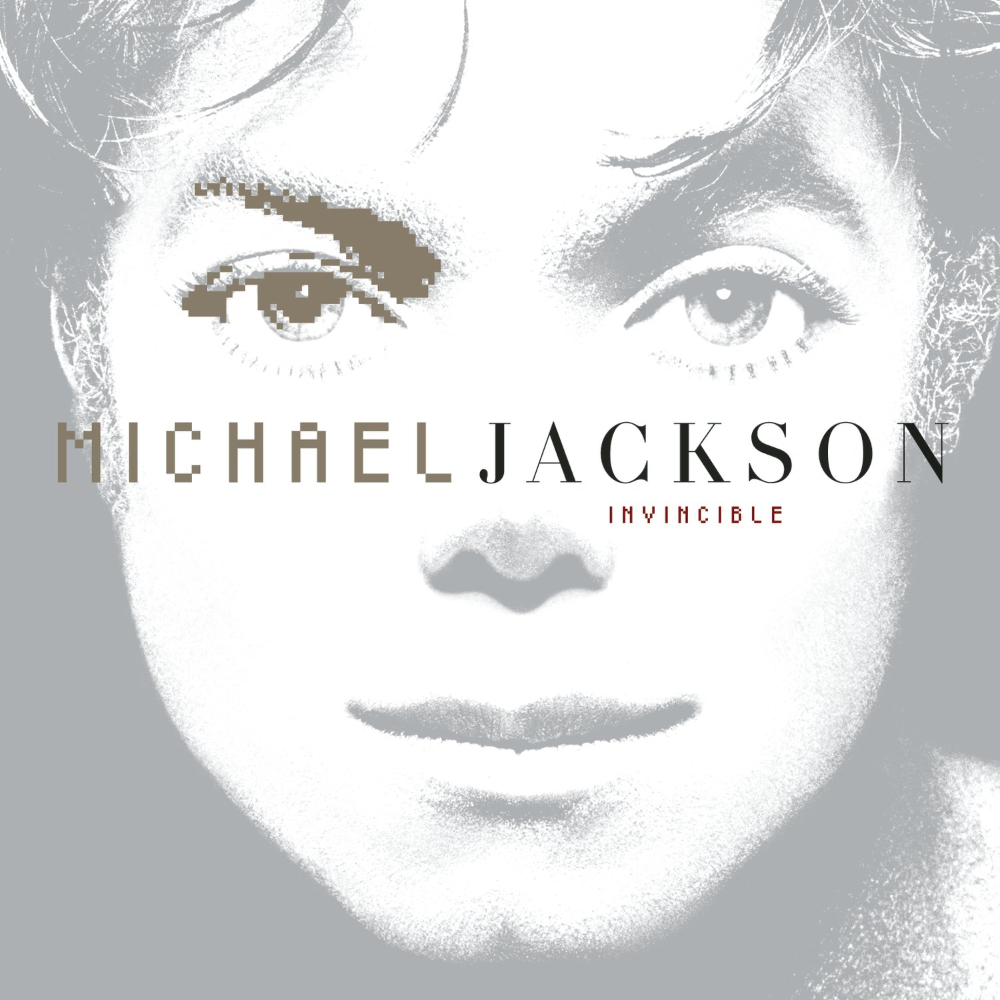
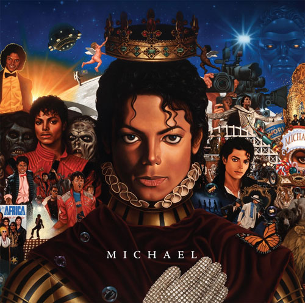
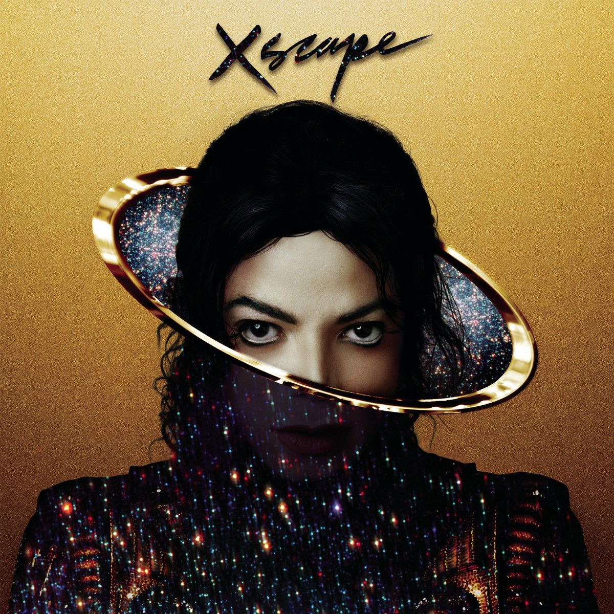

Got to Be There es el primer álbum de estudio como solista con el que Michael Jackson debutó en 1972, lanzado por la compañía discográfica Motown Records, teniendo tan sólo 13 años. Alcanzó un éxito de ventas a ambos lados del Atlántico, como su siguiente disco Ben.
El género del álbum es soul y alcanzó el top 14 de los más vendidos en los Estados Unidos de la música pop. La canción que da título al disco es una balada, y su primer sencillo en solitario que llegó al número 4 de los Charts de los Billboard Hot 100. Rockin' Robin, sería otro éxito de este disco que llegó al 2. Este LP también fue éxito en Latinoamérica, especialmente en Venezuela.
El álbum vendió 4,1 millones de copias en todo el mundo y 3 millones de ellas en los Estados Unidos. Tras un total de cuatro discos en solitario, Michael Jackson volvería con The Jackson Five.

Ben es el segundo álbum de Michael Jackson a los 13 años de edad, que salió al mercado en agosto de 1972. Tan solo 7 meses después de su primer álbum Got To Be There.
El álbum está formado por baladas románticas, género que no es muy común en la banda musical a la que también pertenec´a de los Jackson Five junto a sus hermanos.
La canción de mayor éxito fue "Ben", que da título al álbum y que alcanzó el primer puesto de sencillos de música Pop siendo el primer número 1 de Michael en solitario. El sencillo también alcanzó el quinto puesto como música Soul. Adem´s, ganó un Globo de Oro y fue nominado para la Academy Award.
El álbum vendió 4,4 millones de discos en todo el mundo, 3,3 millones de ellos en EE.UU.

Music & Me es el tercer álbum de estudio de Michael Jackson en solitario a los 14 años de edad, que se editó en 1973 a través de la compañía discográfica Motown. "With a Child's Heart" fue el único sencillo del álbum, originalmente grabado por Stevie Wonder. "Happy" y "Music and Me" son otras dos canciones de gran talento, que muestran la excelente voz de Michael, y que figurarían en otros álbumes recopilatorios de la carrera musical de Michael como en "The Best of Michael Jackson" en 1975, o en Anthology (Michael Jackson) en 1986, este último, además con canciones de The Jackson Five. Dado que las ventas no fueron tan buenas como sus dos anteriores álbumes, la Motown decidió centrar la carrera musical de Michael Jackson, con la de sus hermanos en los Jackson Five. Este fue uno de los principales motivos por los que Michael decidió cambiar de compañía discográfica Epic Records, para grabar el álbum en solitario de Off the Wall.

Forever, Michael —en español: Para siempre, Michael — es el cuarto disco de Michael Jackson como solista y que terminaría por ser su último álbum con Motown en libertad. Este álbum muestra un cambio en el género musical de los dieciséis años de edad, quien adoptó un sonido más Soft Soul que iba a seguir desarrollando en sus discos en solitario después de Epic Records. La mayoría de los temas fueron grabados en 1974, y el álbum fue originalmente programado para ser lanzado ese año. Sin embargo, debido a la demanda del gran éxito de Jackson five con «Dancing Machine», la producción en el álbum de Jackson se retrasó. El álbum ayudó a volver a Jackson a los 40 mejores, ayudados por los sencillos «We're Almost There» y «Just a Little Bit of You», escrita por los Hermanos Holland de Holland-Dozier-Holland.
Posteriormente, el disco se convirtió en su primer álbum en salir a la venta en formato casete en mayo de 1982 vendiendo 300 000 unidades.

Off the Wall es el quinto álbum de estudio solista de Michael Jackson editado en 1979. Cuatro son los temas firmados por Jackson en este álbum, de los cuales el primer sencillo, «Don't Stop 'Til You Get Enough», obtuvo un éxito en los Estados Unidos y en el Reino Unido. Rod Temperton, el letrista que más tarde colaboraría en el álbum Thriller, ofreció en esta ocasión «Rock with You», que alcanzó el número uno en Estados Unidos, o el tema que da título al disco, «Off the Wall». En octubre de 2009 se publicó una versión demo de «She's Out of My Life» , que se incluyó en el segundo disco de los temas inéditos del álbum This Is It.

Thriller es el sexto álbum de estudio del artista estadounidense Michael Jackson, publicado el 30 de noviembre de 1982 por Epic Records después del éxito crítico y comercial del álbum Off the Wall del mismo artista lanzado en 1979. El propio Jackson escribió cuatro de las nueve canciones del álbum. El producto final fue lanzado en el mes de noviembre siguiente, y tras poco más de un año se convirtió en el álbum más vendido de la historia a nivel mundial, llegando a superar el listón de sesenta y seis millones de copias comercializadas en 2017. Siete de las nueve canciones del álbum fueron lanzadas como sencillos y todos ellos llegaron al top diez en el Billboard Hot 100. El álbum ganó un récord de ocho premios Grammy en la edición de 1984. En 2001, se publicó una reedición especial del álbum que contenía entrevistas adicionales de audio, un demo y la canción «Someone in the Dark», que fue ganadora de un Grammy por su aparición en el audiolibro de la película E.T. El Extraterrestre En 2008, el álbum fue reeditado como Thriller 25, conteniendo remezclas y canciones inéditas.

Bad es el séptimo álbum de estudio del cantante estadounidense Michael Jackson, publicado por Epic Records el 31 de agosto de 1987. Jackson se involucró como coproductor y compuso nueve de los diez temas del álbum, dos de los cuales son duetos. También alcanzó el primer puesto en otros 24 países, incluido el Reino Unido, donde vendió 500 000 en sus primeros cinco días y se convirtió en el álbum más vendido del país en 1987. Esto estableció a Jackson como el artista con más canciones número uno de un mismo álbum. Fue nominado a seis premios Grammy, y ganó en la categoría «Mejor arreglo para álbum - no clásico» y «Mejor videoclip».

Dangerous es el octavo álbum de estudio del cantante estadounidense Michael Jackson, publicado el 26 de noviembre de 1991. Es el primer álbum tras el reinado de Quincy Jones como productor de Michael Jackson. El álbum produjo números uno como «Black or White», «Remember the Time», «Jam» y otros sencillos como «Will You Be There», de la película Free Willy, y «Who Is It». Dangerous es considerado el álbum más personal del cantante porque en él, se expresa con mayor libertad creativa.
Ha vendido 32 millones de copias en el mundo, lo que lo convierte en uno de los más vendidos de la historia. Entre los géneros musicales se encuentra el hard rock («Black or White» y «Give In to Me»); soul o funk que se fusiona con dance o hip hop (fusión llamada new jack swing) en canciones como «Remember the Time», «Jam», «Dangerous», y el góspel en «Will You Be There» o «Keep the Faith».

HIStory: Past, Present and Future
Abarca dos discos compactos, el primero consiste en una recopilación de los mayores éxitos de Jackson en su carrera como solista, y el segundo un disco con canciones propias nuevas, a modo de su quinto álbum de estudio con Sony. Con prácticamente todas los temas escritos y compuestos por él, el álbum se caracteriza por una alta crítica social en la que Jackson pretende plasmar su espíritu e ideales. HIStory también se destacó por la colaboración de artistas como Kelly, Boyz II Men, Jimmy Jam, Terry Lewis, Andrae Chour Singers, Nile Rodgers, Slash y, particularmente, Janet Jackson, hermana de Michael, con quien compartió un controvertido dúo en «Scream» , el primer sencillo del álbum. Publicado un mes antes del lanzamiento del álbum, «Scream» fue un gran éxito, apoyado por amplia promoción y el vídeo musical más caro de la historia , cuya producción se elevó al coste de siete millones de dólares.
«Come together» se usó en la película promocional del álbum Bad, Moonwalker, como última canción del filme y posteriormente como side-B en el sencillo de Remember The Time, hasta que se añadió a HIStory de manera oficial.

Es un álbum de remezclas del cantante y bailarín estadounidense Michael Jackson.
También considerado por muchos como álbum de estudio por contener 5 canciones nuevas, aunque dadas las diversas opiniones se le adjudican ambos términos.
Fue publicado por la compañía discográfica Epic Records el 20 de mayo de 1997. Contuvo ocho canciones que fueron remixadas de su anterior álbum, HIStory: Past, Present and Future, Book I, y cinco nuevos temas. Recibió opiniones diversas de los críticos de música contemporánea. Al respecto, fue criticado por tener letras superficiales. Tuvo dos sencillos y múltiples discos de platino, en varios países, al venderse más de 6 millones de copias en todo mundo, convirtiéndose así en el álbum de remezclas más vendido de la historia.

Invincible es el décimo primer y último álbum de estudio en vida de Michael Jackson lanzado el 30 de octubre de 2001. El álbum cuenta con dieciséis canciones de las cuales "You Rock My World" y "Butterflies" son las canciones más reconocidas del álbum. Tiene el récord al disco con más dinero invertido en su producción por ser el álbum más caro de la historia, Sony Music le pagó a Michael, 40 millones de dólares para su elaboración y otros 25 millones de dólares para promocionarlo. El álbum incorpora los géneros R&B, Pop y Soul, y de manera similar al material anterior de Jackson, el álbum explora temas como el amor, el romance, el aislamiento, la crítica de los medios y los problemas sociales.
Para dicho álbum, se hicieron más de 50 canciones para después ser producidas y mezcladas, pero al final solamente se eligieron dieciséis. El álbum llegó al número uno en once países, incluyendo a los Estados Unidos , el Reino Unido, Australia, Francia y Suiza. El álbum fue nominado al premio Grammy por Mejor Interpretación Vocal Pop Masculina, además de ser votado por los lectores de la revista Billboard como el mejor álbum de la década.

Michael es el duodécimo álbum de estudio y primer álbum póstumo que contiene temas inéditos del cantante estadounidense Michael Jackson. Michael es el séptimo álbum de Jackson lanzado por Sony y Motown/Universal desde su muerte en junio de 2009. El viernes 10 de diciembre de 2010, un cartel publicitario de 29.070 pies cuadrados , con las portadas del álbum fue erigido en la granja de Rectory en Middlesex, Inglaterra, rompiendo el Récord mundial Guinness por el cartel publicitario más grande en todo el mundo.

Xscape (estilizado como «XSCAPE») es el segundo álbum póstumo de temas inéditos del cantante estadounidense Michael Jackson. Es su octavo álbum de estudio lanzado por Epic Records. Fue lanzado el 13 de mayo de 2014 en Epic Records y MJJ Music. Es el undécimo álbum lanzado por Sony y Motown desde la muerte de Jackson en junio de 2009. L.A. Reid, presidente de Epic Records, curó y sirvió como productor ejecutivo para el álbum reclutando a Timbaland para dirigir un equipo de productores de discos, incluyendo Stargate, Jerome "J-Roc" Harmon, John McClain y Rodney Jerkins para remezclar y contemporizar las ocho pistas seleccionadas. Jerkins produjo el título de la canción y es el único productor de las canciones originales para trabajar en las producciones finales.
Xscape fue promovido en todo el grupo de empresas Sony; Sony Mobile utiliza un fragmento de "Slave to the Rhythm" en su campaña de publicidad para el tel&eaute;fono móvil Xperia Z2. "Love Never Felt So Good" fue anunciado como el único primer sencillo para el estreno el 1 de mayo de 2014. La edición de lujo del álbum incluye todas las canciones en sus formas originales, así como una pista adicional y dos videos.
